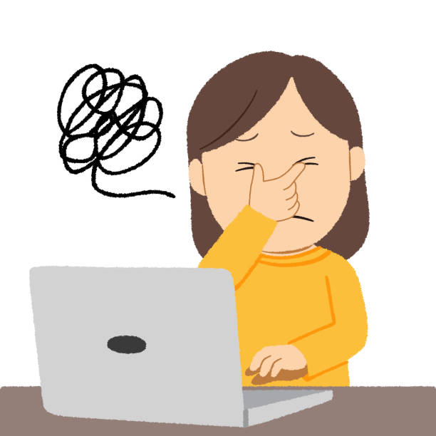

Principales riesgos y medidas de prevención
Los problemas posturales y musculoesqueléticos son frecuentes y suelen manifestarse como dolor de espalda especialmente lumbalgias dolor de cuello y hombros síndrome del túnel carpiano y contracturas musculares estos problemas suelen estar relacionados con una mala postura al sentarse el uso de mesas o sillas mal ajustadas y el uso prolongado del teclado y el ratón

La fatiga visual es un problema frecuente en el sector de informática y suele manifestarse con ojos secos o irritados, visión borrosa, dolores de cabeza y cansancio ocular. Estos síntomas aparecen principalmente por pasar muchas horas frente a las pantallas, trabajar con una iluminación inadecuada y usar monitores mal regulados en cuanto a brillo y contraste.
Los riesgos psicológicos en el sector de informática son cada vez más comunes y suelen manifestarse como estrés laboral, ansiedad, agotamiento mental o burnout y, en algunos casos, aislamiento social. Estos problemas suelen estar relacionados con una carga de trabajo excesiva, plazos muy ajustados, tareas repetitivas o monótonas y el teletrabajo sin límites claros entre la vida personal y laboral.